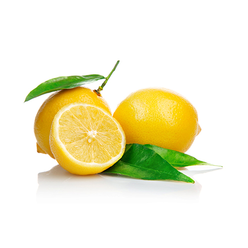

hydroxykyseliny& ketokyselinyvlastnosi, zajimavosti, využití
mléčná
jablečná
citronová
vinná
salicylová
pyrohroznová
Kyselina mléčná
C3H6O3
Využití, vznik, vlastnosti
její polymer je médium pro růst kmenových buněknadměrná silová zátěž = nelze ji z tkáně odstraňovat dostatečně rychlev nápojích, cukrovinkách, margarínech, olivách atd.
víte, že...
je klíčová sloučenina využívaná při produkci krevní glukózy, využívání
glykogenu z jater a následné poskytování energievzniká při kvašení vína, zvláště při vyšší teplotě
Kyselina jablečná
C4H6O5
Využití, vznik, vlastnosti
přidává se do potravin - E296nachází se v ovociv lidském těle jako anion "malát"přirozeně se vyskytuje v přírodě, nejvíce v nezralém ovoci, zelených
jablkách, višních, hroznech, meruňkách, hruškách, apod.
víte, že…
je důležitou součástí ve víněmá velmi výraznou chuť, která setrvává ve vyzrálých hroznech a ve
zredukované formě i ve víně
Kyselina citronová
C6H8O7
Využití, vznik, vlastnosti
jako antioxidant - prodlužuje dobu trvanlivostijako všestraný čistící prostředek - odstranění vodního kamene, zabraňuje
růstu plísní, čištění varných konvic, myček nádobí a praček
víte, že...
v roce 1893, C. Wehmer - některé druhy plísní dokážou
produkovat kyselinu citronovou z cukruobjev kyseliny citronové je připisován islámskému alchymistovi Jabir Ibn
Hayyanouovi, který ji objevil již v 8. století

Kyselina vinná
C4H6O5
Využití, vznik, vlastnosti
v potravinářství – výroba šumivých nápojů a prášků do pečivapoužívá se v barvírenském průmyslve vinařství – úprava kyselosti vína a moštuslouží také jako konzervantdobře rozpustná ve voděbezbarvá krystalická látka
víte, že...
je regulátor kyselosti - látka, která mění či udržuje kyselost potravinyje tzv. plnidlo - látka přispívající k objemu potravin bez většího zvyšování
její energetické hodnotyobsah kyseliny vinné v hroznech a víně stoupá během vegetačního období, kdy
v hroznech přibývá cukr
Kyselina salicylová
C7H6O3
Využití, vznik, vlastnosti
účinkuje jako rostlinný hormonvyužívá se v organické syntézekožní lékařství - použití pro léčbu aknékonzervace potravinbarvírenský průmyslchemicky příbuzná aktivní složkou aspirinušpatně rozpustná ve vodě
víte, že...
název salicylová pochází z latiny – salix = vrba (tuto kyselinu lze získat z
kůry vrby)jejím používáním lze předejít tvorbě černých tečekuvolňuje ucpané póry, odstraňuje záněty, odumřelé buňky z povrchu pokožky a
bojuje s hormonální nerovnováhou a do hloubky čistí pleť.
Kyselina pyrohroznová
C3H4O3
Využití & vznik
stejně jako kyselina salicylová se používá v kožním lékařstvíprodukt buněčného metabolismu
víte, že...
vzniká ve svalech – velké množství může způsobit svalovou smrt – enzymem je
rozložena na kyselinu mléčnou a vodu
společné vlastnosti
Skládají se pouze z Uhlíku, kyslíku a vodíku.Většina se nachází v ovoci, víně aj.Většina se nachází samovolně v přírodě.Hydroxykyseliny mají v řetězci mimo funkční skupinu nahrazen atom vodíku hydroxylovou skupinou -OH-Ketokyseliny mají v řetězci ketoskupinu -CO-